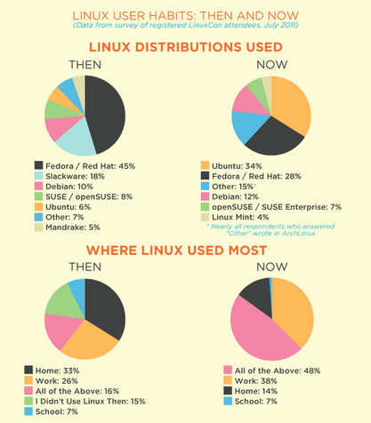
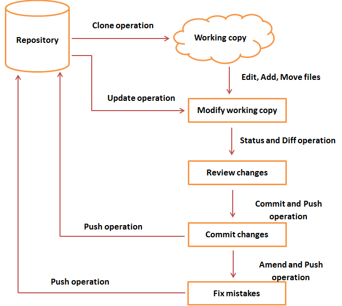
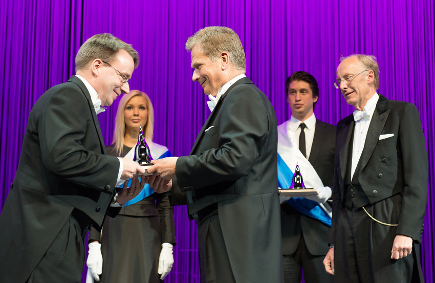

BASIC INFO
Linus is a famous computer programmer. He started his interest with computers at the age of 10, playing his grandfather's old Commodore computer. He studied computer science at the University of Helsinki where he got his first computer. He became dissatisfied with the MS-DOS operating system, having preference to the Unix OS.

LINUX
basic infographic to illustrate uses and forms of Linux over time
In 1991 he started on the development of his own operating system based on the Unix OS as response to the steep price tag of a UNIX system ($5000+). He wanted to create an operating system that was compliant with Unix. The Linux kernel was written in C programming language which he learned in 1990 at his university. Linus made it known on internet by posting the news of its availability online. The program was made free for downloading and open source, meaning that it could be modified by anyone. This decision would help popularize open source software development. Linux's popularity increased in the 90's due to its cheap licensing fee, made it an alternative to Microsoft Windows. In addition, some appealing aspects are its reliability as it rarely crashes and is well protected against malware. Today, Linux is used by many corporations and on countless mobile devices like Androids. In 2012, Linus was awarded the Millennium Technology Prize for the creation of the Linux operating system.

GIT
basic flow chart to demonstrate the multilayer processes of git
GIT: BitKeeper was the tool used to maintain the source code of the Linux kernel and helped with the collaborative development of the Linux. However, this changed when the company that owned BitKeeper decided to stop giving free version to developers and refused to sell licenses to Open Source Development Labs (precursor to the Linux Foundation). This prompted Linus to create an alternative version control system: git. This program would be adopted by other software development projects as a tool to manage files worked on by multiple people. Today, this type of system is hosted by sites like GitHub and GitLab to service innumerable software projects.
Linus Torvalds receiving the 2012 Millennium Technology Prize & $750,000 alongside Shinya Yamanaka for his work on Linux